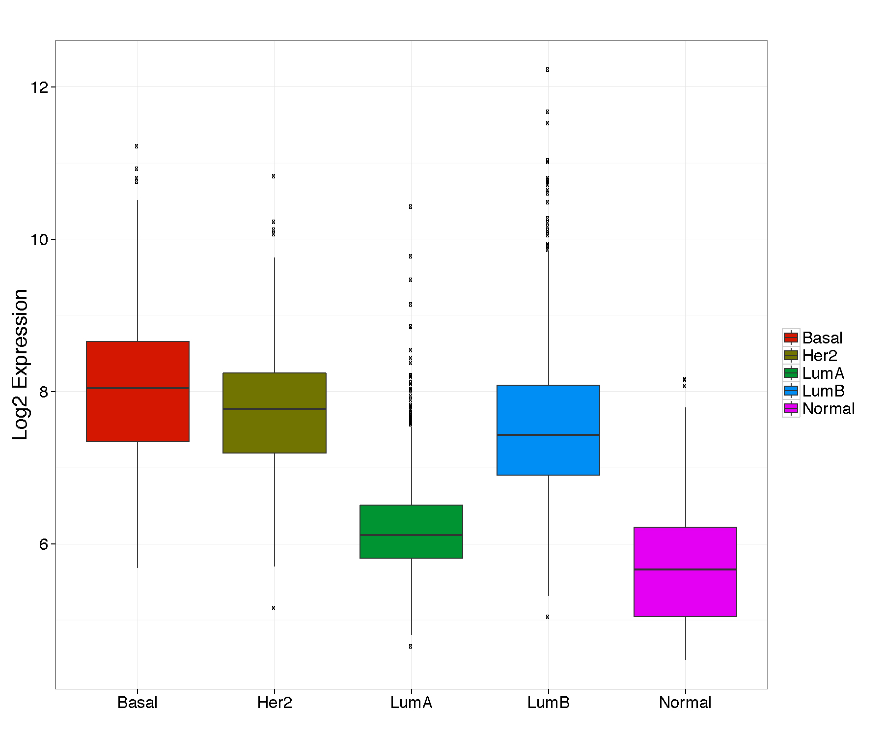

Functional CoExpression
-
Functional CoExpression
- This program produces correlation coefficients, clusters gene expression and performs ontology enrichment.
-
Parameters
-
Id Type/Identifier
- Enter a valid HGU133A probeset (204624_at) or a HUGO gene symbol. If a gene symbol is entered the best available probeset will be identified using jetset Add link
-
Subtype
- Classifier that defines the tumor subtypes. PAM50 or MOD.
-
Enrichment
- Performs ontology enrichment using the ranked correlation coefficients
-
Id Type/Identifier
-
Data Output
- Following submission, the results are printed in the webpage with a link to download all the relevent data and plots as a zip file. All plots are generated as PDFs to ensure high quality for publication purposes.Generated data include:
- Correlation Table
- Correllelogram
- Enrichment Results
- Following submission, the results are printed in the webpage with a link to download all the relevent data and plots as a zip file. All plots are generated as PDFs to ensure high quality for publication purposes.Generated data include:
